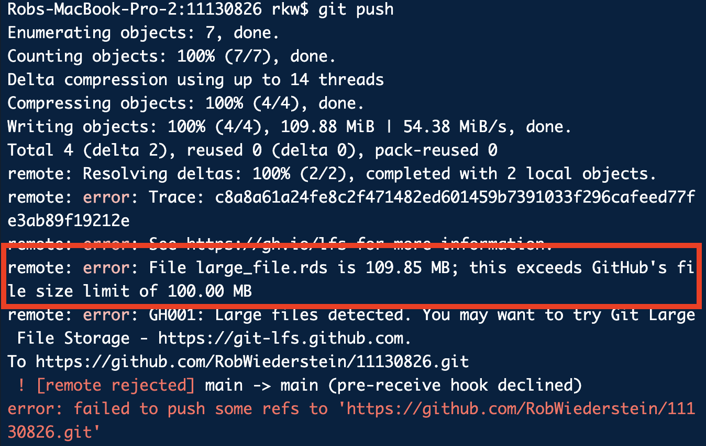
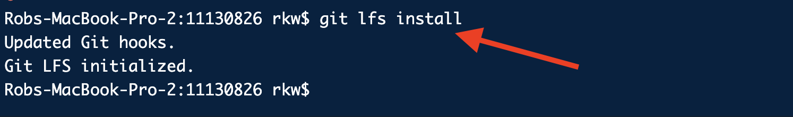
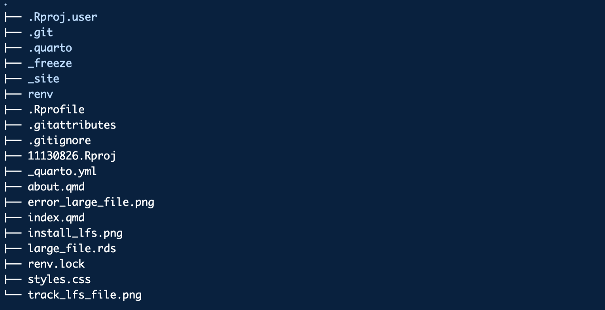

git checkout --orphan gh-pages
git reset --hard # make sure all changes are committed before running this!
git commit --allow-empty -m "Initialising gh-pages branch"
git push origin gh-pages11130826
Recently, I went to push a large website to GitHub pages as an interim step to finalizing it. Deploying websites is more time-consuming than I would like so only a portion of the website was deployed. The site relies on some java script libraries. I’d run into GitHub’s large file size error before but managed to push through it. This time, however, proved to be trickier. This time the files were part of a larger quarto project. This post describes the interaction between quarto, git, gitHub, and large files.
Quarto
The quarto documentation is always a helpful place to start. They describe how to deploy a website using three methods. The first method was the only one that I’d ever tried and it worked great. With that option, you have the quarto website publish to a /docs folder and then finish setting it up in the settings portion of GitHub. For a large site, this seemed really cumbersome a different option was appealing. The second options is referred to as the “Publish Command”. The site is deployed on the gh-pages branch. The three steps are (1) set the gh-pages as the source branch, (2) add output to the .gitignore file, (3) publish the site. (More on this below.)
gh-pages branch
Use the following commands to set up the gh-pages branch, but only if you’ve not already done it in the settings of the remote GitHub settings page.
Add output to .gitignore
/.quarto/
/_site/
_freeze/ # I also added the _freeze folderIf you’ve indavertently added the _site folder to the repository, you can remove it with the following command. _site is the default output directory in quarto.
git rm -r _sitePublish the site
In the terminal run:
quarto publish gh-pagesLarge Files
The key challenge was to add a file that exceeded GitHub’s large file cap of 100 MB. A large file was created in R and saved as an .rds file. The file was then added to the repository. A large matrix was created and saved. The file size was 1.1518312^{8}. The offending file is named large_file.rds.
Create Large File
dm <- matrix(rnorm(1.5e7), ncol = 1e3)
df <- data.frame(dm)
saveRDS(df, "./large_file.rds") X1 X2 X3 X4 X5
1 -0.5945043 0.05552601 1.7629955 -1.1452599 -0.3700701
2 1.9058854 -1.15704061 -0.2094798 -0.7316201 0.7165064
3 -0.3326835 0.49451659 -1.2528523 0.1619851 -1.1411830
4 1.4756140 -1.05738822 -0.4784038 -0.2770225 -0.2503507
5 -0.3095474 -0.84214194 1.2038069 -0.5781924 1.5941913knitr::include_graphics("./img/error_large_file.png")
Install LFS
For mac users, you can just do brew install git-lfs, then within the repository, you run git lfs install.
knitr::include_graphics("./img/install_lfs.png")
Next add the file or directory to be tracked:
git lfs track "large_file.rds"knitr::include_graphics("./img/track_lfs_file.png")A new file named .gitattributes is created and a text line is shows the file to be tracked.
knitr::include_graphics("./img/new_gitattributes_file.png")
Added
large_file.rds filter=lfs diff=lfs merge=lfs -textAdd the .gitattributes file with
git add .gitattributesCaching
So you’ll keep getting errors unless you remove the files from the cache. See SO question: Git error, need to remove large file
git rm --cached giant_file
git commit --amend -CHEAD
#or
git filter-branch -f --tree-filter 'rm -f /path/to/file' HEAD --allHelpful Links
git still shows files as modified after adding to .gitignore
_freeze Note that freeze controls whether execution occurs during global project renders.